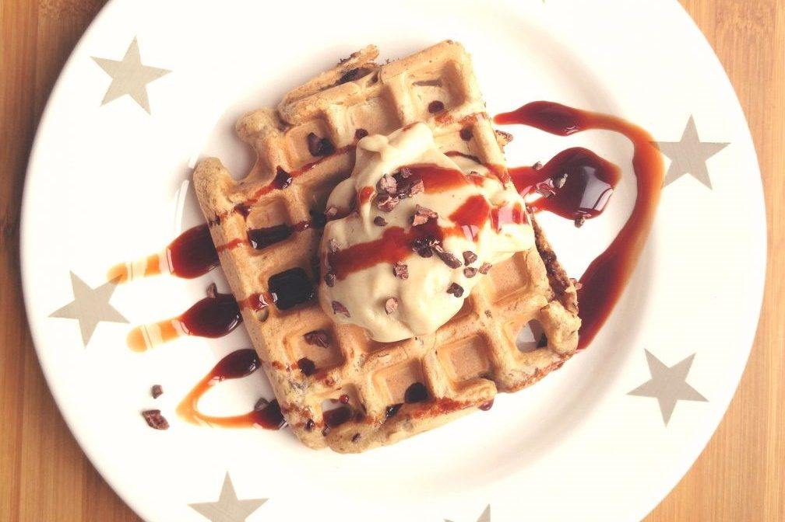

Un gofre (del francés gaufre), llamado también con los extranjerismos de waffle, Wafol o wafle (del neerlandés Wafel), es una especie de galleta con masa crujiente parecida a un barquillo, de tipo oblea de origen belga que se cocina entre dos planchas calientes. El gofre tiene apariencia de rejilla, que es resultado del molde de la gofrera (placa con molde especial elaborada de hierro fundido o de aluminio). La forma de la rejilla extruida asegura la cocción de toda la masa. Es muy común que a la masa aligerada con agua hecha con una mezcla de harina leudada, se le añadan otros ingredientes a modo de crema, entre los cuales el más habitual es el chocolate o el mantecado. La práctica de cocinarlo entre placas que mantienen la temperatura a 100 grados centígrados y una presión de vapor sellada constante, hace útil su elaboración en climas de fríos extremos y le da el color anaranjado característico. Se sirve caliente.
